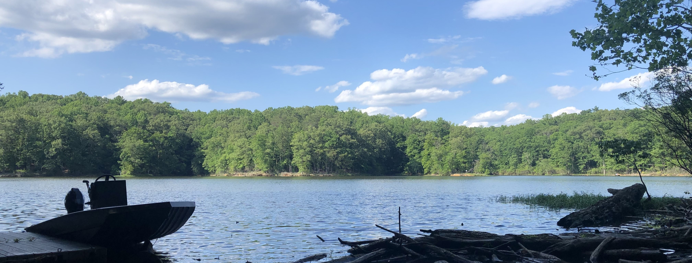

days like this.
A breeze cools off the spring sun that's been gently warming you all day. Your ears are filled with the quiet swaying of trees and rythmyic creeping of the water up and down the shore. Birds sing a unique song to eachother in the world of branches, protected by the spotty canopy of the forest. Fry fly through the shallow water in schools, hoping to avoid their inevitable fate. The cycle of life rages on below the surface of the water. These are the moments we find ourselves surrounded by as fishermen.
This is your one stop shop for fishing content, for anyone from first timers to seasoned fishermen!